01 / 28

Fotografía de alta estética editorial, sesiones personales, quinceañeras y ceremonias sagradas. Capturamos la verdad de cada emoción con una mirada atemporal que trasciende generaciones.

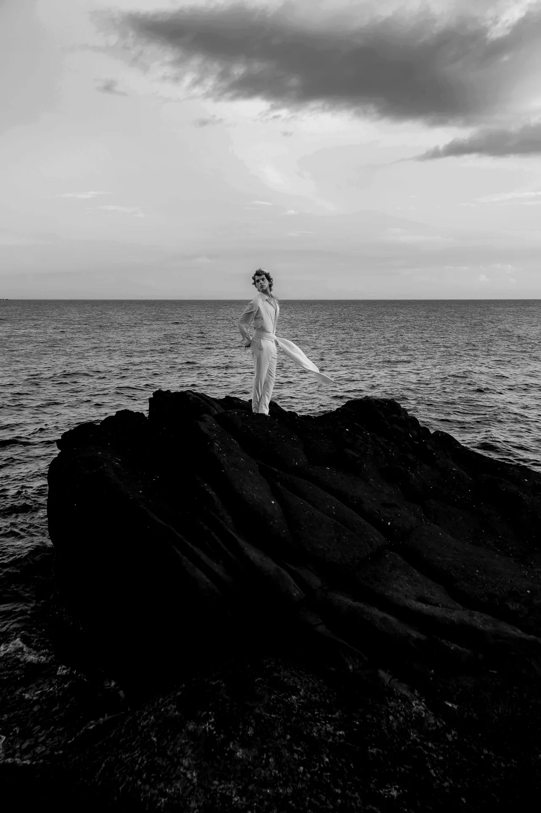
Mi viaje en el mundo visual comenzó con un deseo genuino: congelar el tiempo y encapsular emociones reales en cada fotograma. Con base en la Isla de Margarita y disponibilidad para coberturas nacionales e internacionales, cada proyecto que emprendo está guiado por la elegancia editorial, la luz pura y el respeto por la personalidad única de cada persona.
Ya sea una sesión de moda, una mágica noche de 15 años, o la intimidad solemne de un bautizo o primera comunión, mi objetivo es transformar momentos espontáneos en piezas de arte atemporales que trasciendan en el tiempo.
Manejo de la luz natural dorada del Caribe y esquemas de iluminación de estudio de alto contraste.
Acompañamiento cercano durante cada sesión para que te sientas con total soltura, elegancia y seguridad.
Colorimetría refinada y blanco y negro analógico inspirado en la fotografía de moda contemporánea.
Archivos en ultra alta definición listos para impresiones de bellas artes, álbumes y exhibición digital.
Fotografía editorial, lookbooks de moda, retratos de estudio y exteriores con estilismo.
Ver Fotos →Sesión previa artística con vestidos de gala, vals, entrada triunfal y celebración completa.
Ver Fotos →Cobertura respetuosa y emotiva en templos, pilas bautismales y reuniones familiares.
Ver Fotos →Retratos solemnes de fe en altar mayor, velas decoradas y momentos con seres queridos.
Ver Fotos →Polaroids y digitals sin filtros para castings, agencias internacionales y composite cards.
Ver Fotos →Haz clic en cualquier imagen para abrirla en alta definición a pantalla completa.


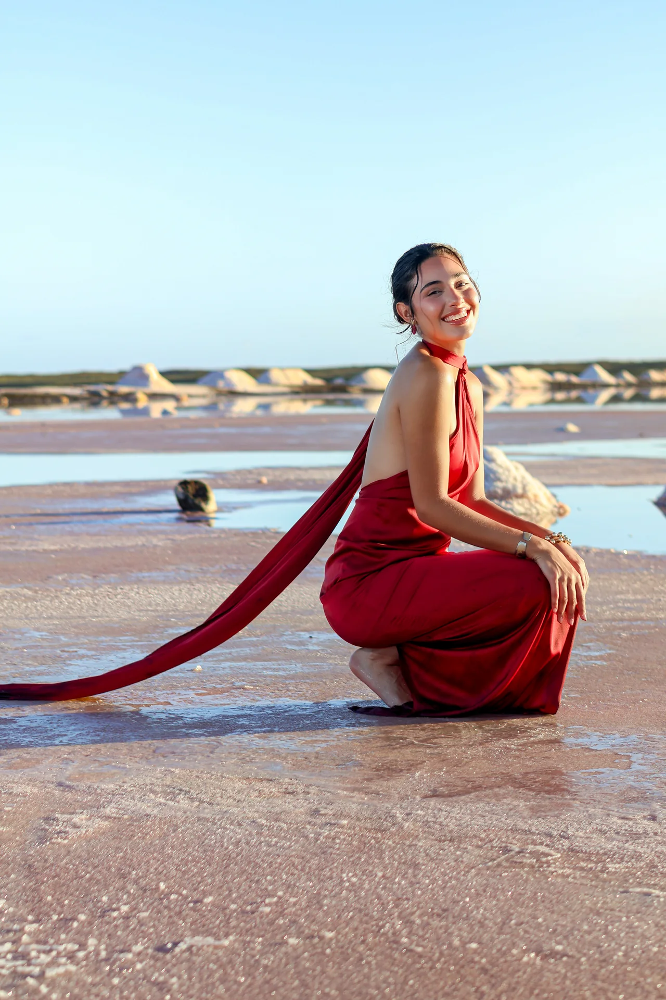


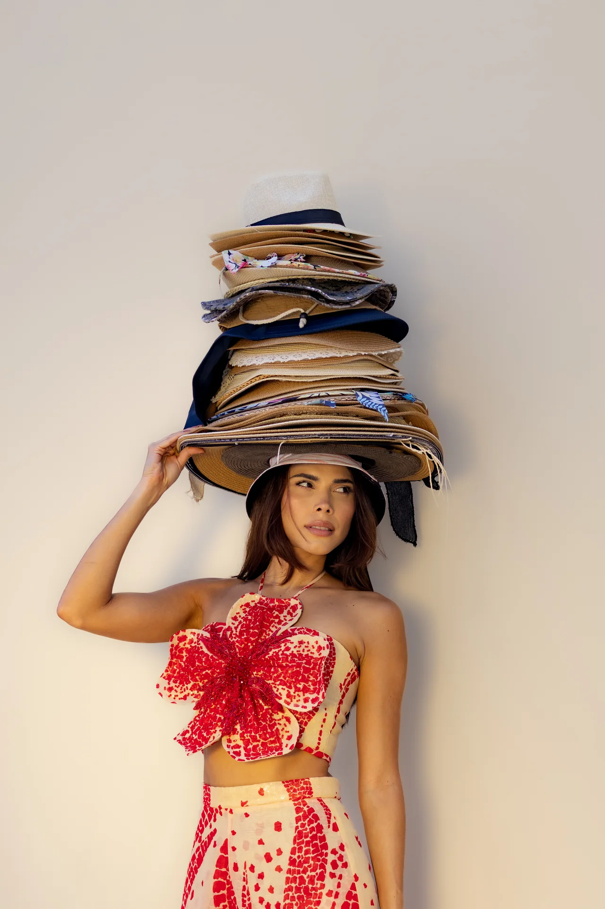
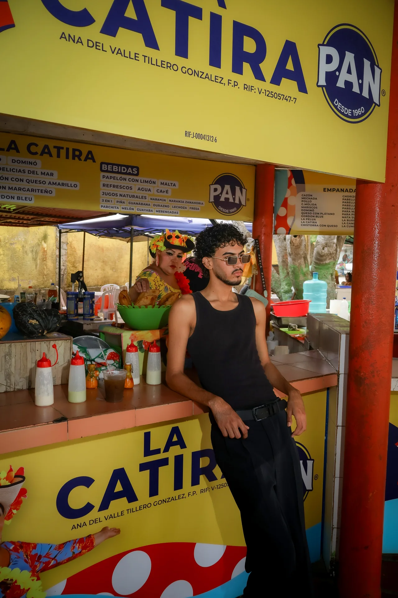
.webp)


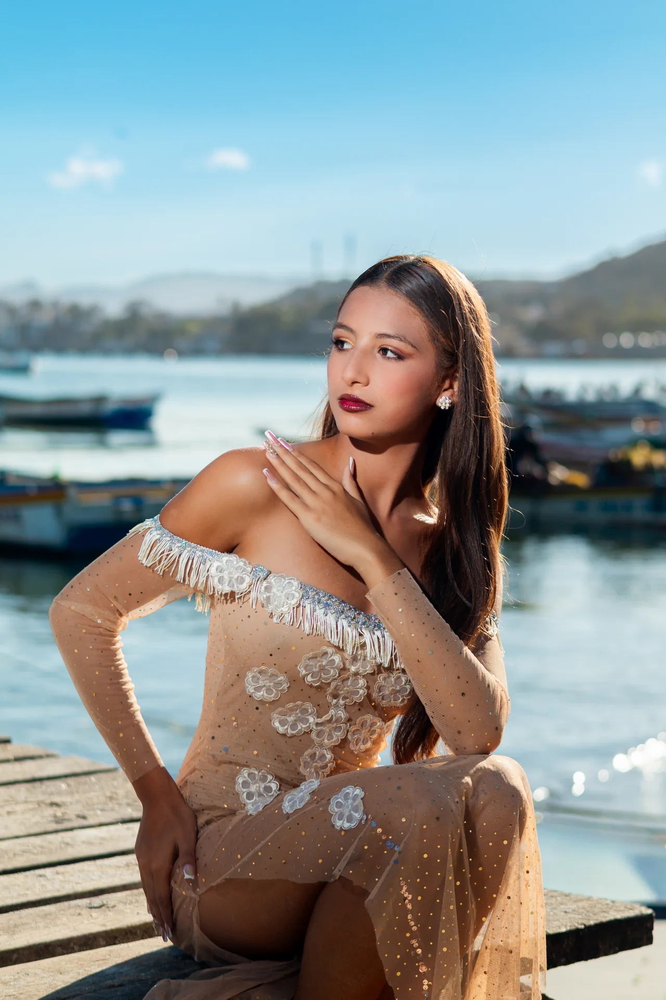
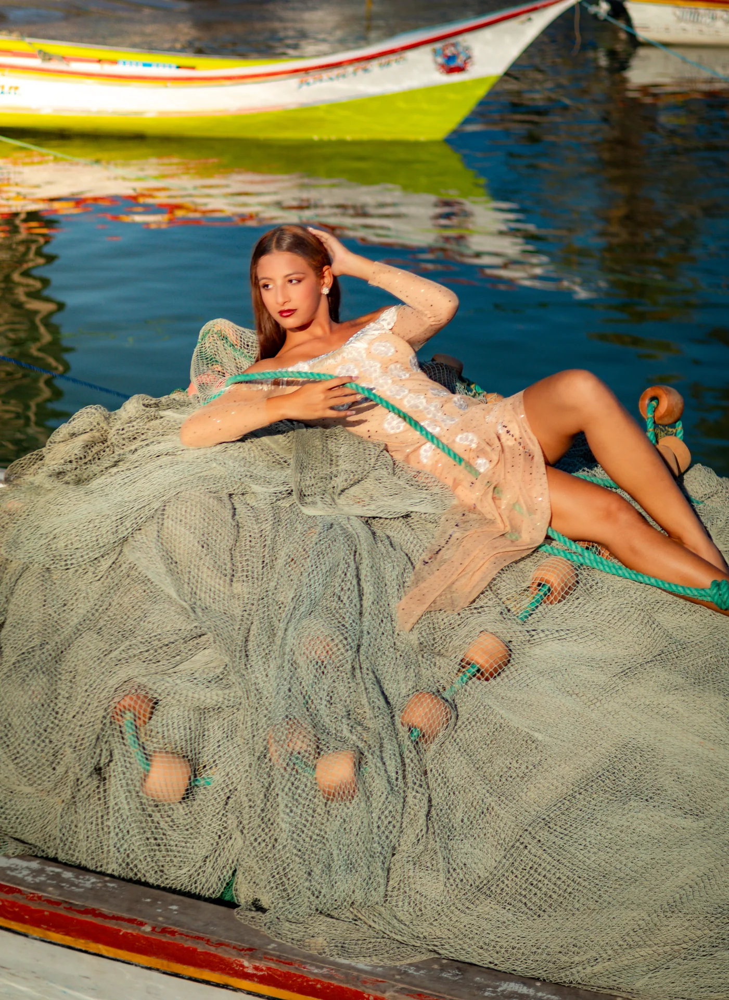


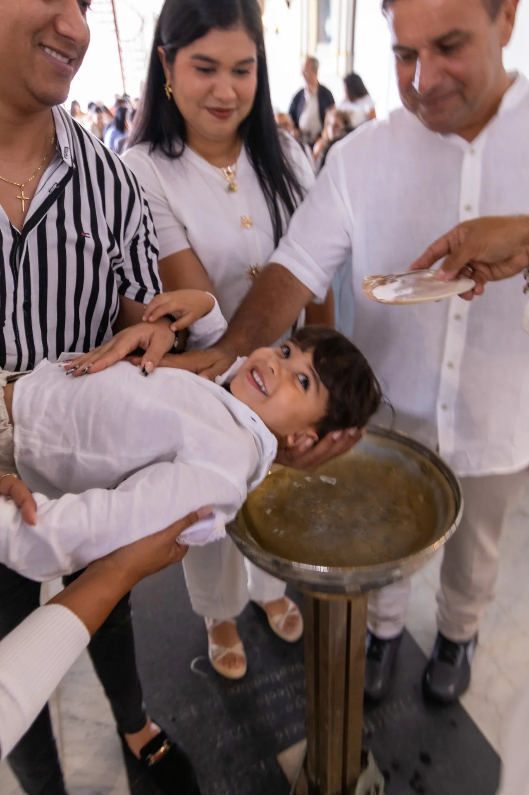
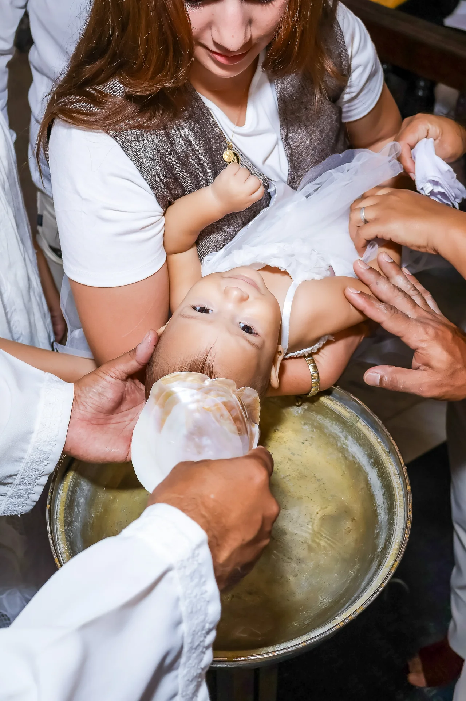
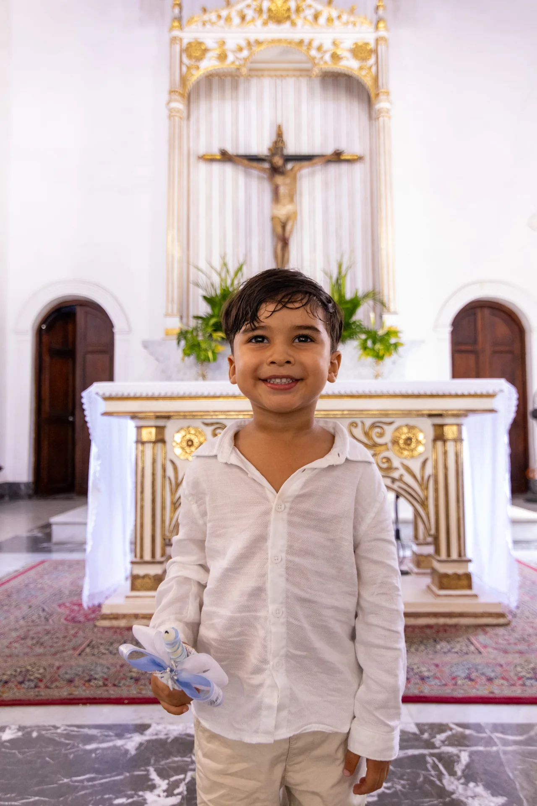
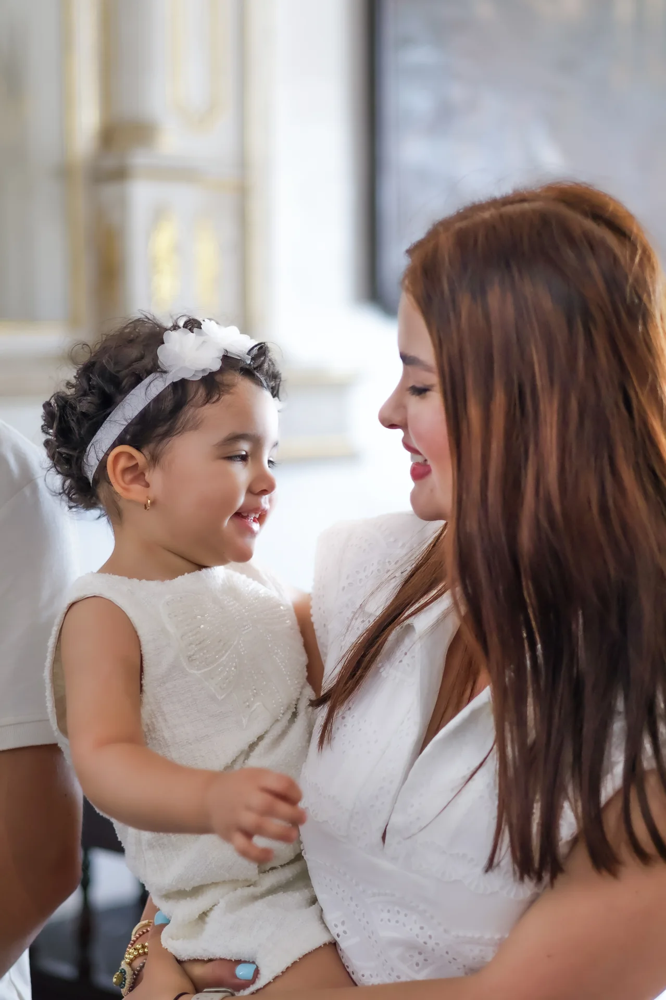

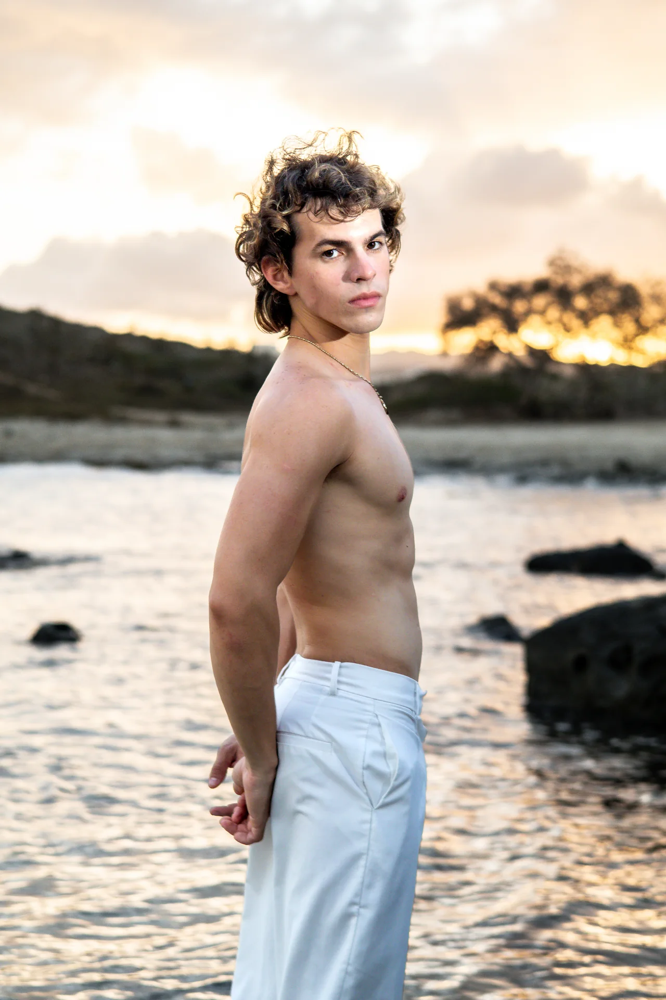
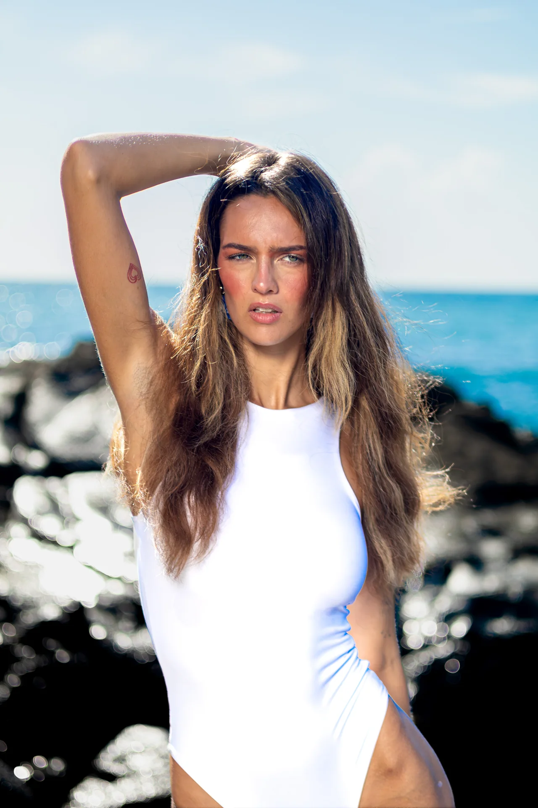
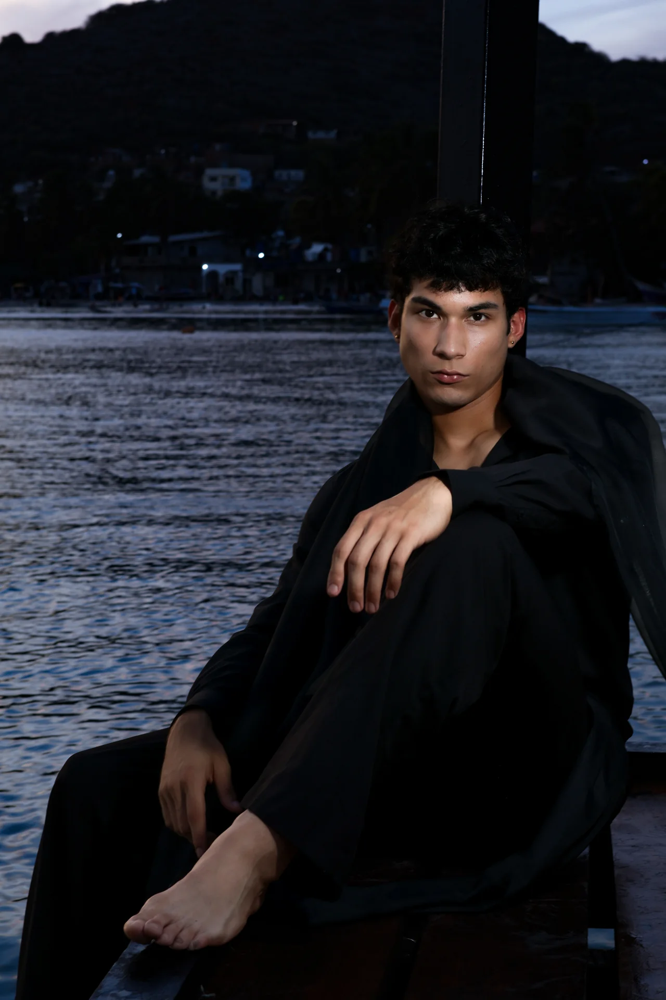